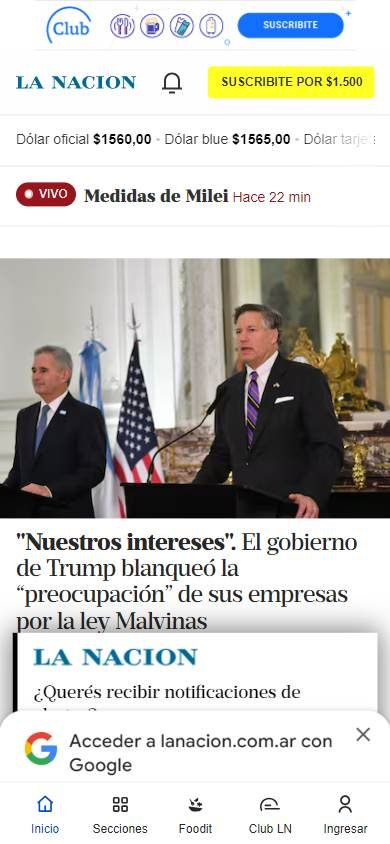
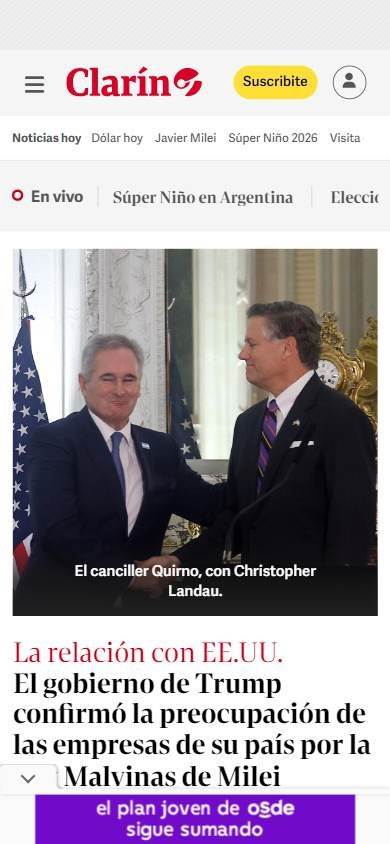
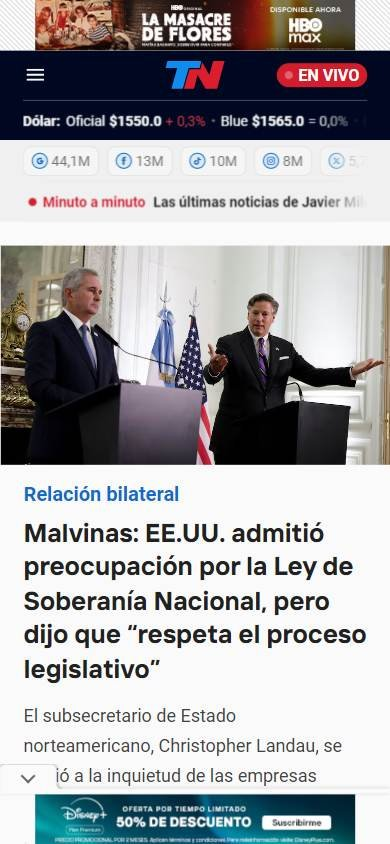

Sitio informativo o de noticias
Los seleccionados
Los tres sitios más visitados de Argentina, según estadísticas de tráfico.
En resumen: lo que hacen los líderes
La pantalla de inicio de cada uno



Estilo visual
Colores, imágenes, tipografía y cuánta información muestran.
Tu estilo visual debería…
- Blanco y negro como base y un único color de acento para la suscripción.
- Titulares grandes, con serifa si querés transmitir tradición o sin serifa si querés modernidad.
- Fotos periodísticas grandes para la noticia principal.
Lo que tienen en común: Paleta casi en blanco y negro para que manden las fotos y los titulares; un solo color de acento para suscribirse o para «En vivo». Tipografía de titulares con serifa en los diarios tradicionales.
La paleta de cada uno
Medida sobre la primera pantalla. Los colores de marca salen del header; el resto muestra cuánto espacio ocupa cada color.
Así lo resuelve cada uno
Ficha comparativa
| Aspecto | La Nación | Clarín | TN |
|---|---|---|---|
| Paleta | Acotada: blanco y negro + amarillo de suscripción | Acotada: blanco, negro y rojo del logo | Acotada: negro + rojo del logo |
| Imágenes | Fotos periodísticas medianas | Fotos periodísticas grandes y medianas | Fotos periodísticas grandes |
| Tipografía | Titulares con serifa, muy grandes | Titulares con serifa | Titulares sin serifa, en negrita |
| Densidad | Alta: muchas notas a la vista | Alta | Alta |
| Botones | Suscripción en amarillo, redondeado | Suscripción en amarillo, redondeado | «En vivo» en rojo |
| Publicidad | Mucha, arriba y abajo | Mucha, arriba | Mucha, arriba |
Header
La franja de arriba con el logo y los accesos.
Tu header debería…
- Header en tres pisos: datos del momento, logo y secciones.
- Un solo botón de color fuerte para suscribirse, a la derecha.
- Si tu medio tiene transmisión, un botón «En vivo» en rojo.
Lo que tienen en común: Los tres arman un header de varios pisos: arriba datos del momento (dólar o temas), en el medio el logo y abajo las secciones. El botón de suscripción es lo único de color fuerte.
Así lo resuelve cada uno


Ficha comparativa
| Aspecto | La Nación | Clarín | TN |
|---|---|---|---|
| Fondo | Blanco | Blanco | Negro |
| Logo | Centrado | A la izquierda | Centrado |
| A la derecha | Suscribirse (amarillo) e Iniciar sesión | Suscribirse (amarillo) e Ingresar | Ingresar y «En vivo» (rojo) |
| Datos arriba | Cotizaciones del dólar | Temas del día | Cotizaciones del dólar |
| PisosIgual en todos | 3 | 3 | 3 |
Menú y categorías
Cómo se organizan las secciones.
Tu menú y categorías debería…
- Ícono de menú con la palabra «Secciones» a la izquierda.
- Una fila de temas del día debajo, en texto chico, sin fondo.
Lo que tienen en común: Todos esconden las secciones completas detrás de un ícono de menú y muestran al lado una fila con los temas del día, que cambia según la actualidad.
Así lo resuelve cada uno

Ficha comparativa
| Aspecto | La Nación | Clarín | TN |
|---|---|---|---|
| Ubicación | Debajo del logo | Debajo del logo | Dentro del header |
| Formato | Botón «Secciones» con ícono de menú | Ícono de menú + fila de secciones | Botón «Secciones» + accesos (Últimas noticias, Deportivo) |
| Temas del día | Sí, fila aparte | Sí, fila aparte | Sí, «Minuto a minuto» |
Primera pantalla
Lo primero que se ve debajo del header.
Tu primera pantalla debería…
- Noticia principal con foto grande y titular en tipografía con serifa o muy negrita.
- Al lado, 2 o 3 noticias secundarias con foto chica.
- Etiqueta roja de «En vivo» cuando corresponde.
Lo que tienen en común: La portada abre con una noticia principal de foto grande y titular fuerte, acompañada de dos o tres noticias más chicas al costado. Arriba de todo hay publicidad en los tres.
Así lo resuelve cada uno
Ficha comparativa
| Aspecto | La Nación | Clarín | TN |
|---|---|---|---|
| Formato | Noticia principal con foto grande y titular a la izquierda | Foto grande a la izquierda y noticias secundarias al lado | Foto grande a la izquierda y columna de noticias |
| Etiqueta de urgencia | «En vivo» | «En vivo» | «Minuto a minuto» |
| Publicidad arribaIgual en todos | Sí | Sí | Sí |